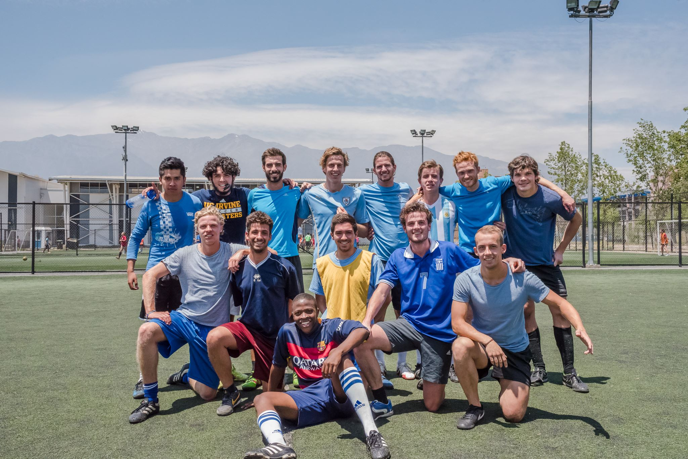

Work
Research Fellow
(Sept 2021 - Present)
I have written my thesis with Professor Alcides Fonseca on interpretable feature learning using Grammar-Guided Genetic Programming (GGGP) as part of the CAMELOT project. As part of the thesis, we build Genetic Engine, an open-source GGGP framework in Python. Currently researching GGGP-based feature learning and GGGP individual representations.
Ingelse, L. and Fonseca, A., (2023). \textit{Domain-Aware Feature Learning with Grammar-Guided Genetic Programming.} EuroGP 2023 Proceedings. Springer Nature.
Espada, G., Ingelse, L., et al. 2022. Data Types as a More Ergonomic Frontend for Grammar-Guided Genetic Programming. In Proceedings of the 21st ACM SIGPLAN International Conference on Generative Programming: Concepts and Experiences (GPCE 2022). Association for Computing Machinery, New York, NY, USA, 86–94. https://doi.org/10.1145/3564719.3568697
Ingelse, L., et al. Benchmarking Individual Representation in Grammar-Guided Genetic Programming. EasyChair (2022): 7821.
de Franca, F. O., et al. "Interpretable Symbolic Regression for Data Science: Analysis of the 2022 Competition." arXiv preprint arXiv:2304.01117 (2023).
Research fellow
(Feb 2021 - Aug 2021)
Worked with Tiago Guerreiro through a Master fellowship, researching gait analysis for motor impaired people. Experimented with transfer learning to personalise gait analysis to make gait analysis more inclusive.
Ingelse, Leon, et al. Personalised Gait Recognition for People with Neurological Conditions. Sensors 22.11 (2022): 3980.

Research and Development
(Feb 2019 - Aug 2020)
As a Data Scientist and a Software Engineer I was part of the Research and Development team at Impact Institute. I started of as an intern, and later worked as a Project Support Officer, working with Impact Institute for a total of one and a half year. Our main achievement was the creation of the Global Impact Database.
About
I was born in Amsterdam, the Netherlands, where I lived most of my life. After high school I studied Spanish in Ecuador and travelled around South America for half a year. After returning, I started a Bachelor's degree in Mathematics at the University of Amsterdam. In 2017 I left Amsterdam for Santiago de Chile, to do a minor in Spanish at the Pontificia Universidad Católica de Chile. In 2018 I finished my Bachelor, but stayed another semester to do a minor in International Development studies.
After my Bachelor's in Mathematics, I started working at the Impact Institute as a software engineer and data scientist. I stayed with them for one-and-a-half years, after which I moved to Lisbon to start a two-year research master's in Data Science.
I am currently living in Lisbon, Portugal, after having finished my master's in Data Science at the University of Lisbon. I wrote my thesis with Professor Alcides Fonseca on the optimisation of interpretable feature learning using Grammar-Guided GP (see more here). I'm currently working with Professor Alcides Fonseca on interpretable feature learning and frameworks to make interpretable machine learning accesible to a larger audience.
My life has four recurring interests. The first are the sciences; mainly mathematics, computer science, data science and logic. The second is people; equality, social justice, teaching, connecting and experiencing cultures. The third is languages; Spanish, Portuguese, Music, Writing and Literature. The last is nature; sports, hiking, travelling and camping.
As an amateur writer, I have a separate page where you can find some of my writings.
